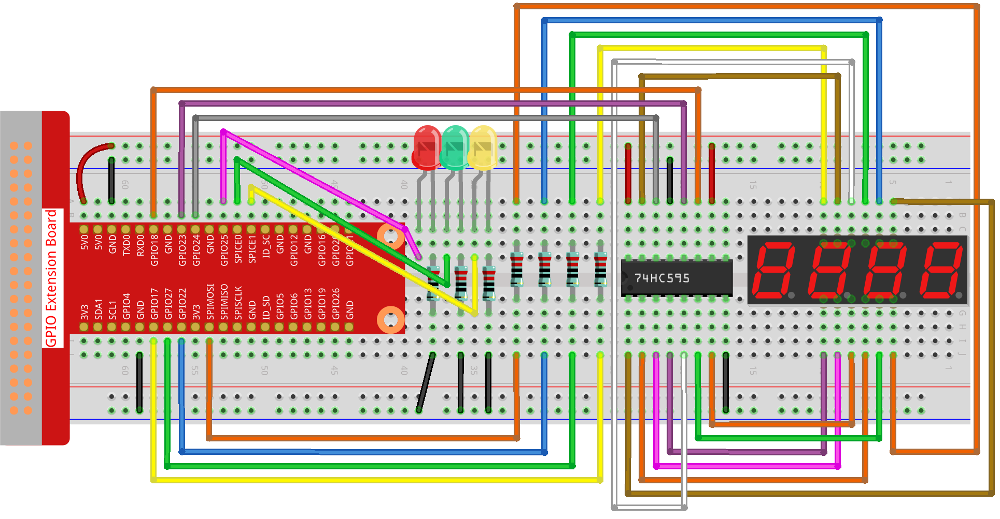

注釈
こんにちは、SunFounderのRaspberry Pi & Arduino & ESP32愛好家コミュニティへようこそ！Facebook上でRaspberry Pi、Arduino、ESP32についてもっと深く掘り下げ、他の愛好家と交流しましょう。
参加する理由は？
エキスパートサポート：コミュニティやチームの助けを借りて、販売後の問題や技術的な課題を解決します。
学び＆共有：ヒントやチュートリアルを交換してスキルを向上させましょう。
独占的なプレビュー：新製品の発表や先行プレビューに早期アクセスしましょう。
特別割引：最新製品の独占割引をお楽しみください。
祭りのプロモーションとギフト：ギフトや祝日のプロモーションに参加しましょう。
👉 私たちと一緒に探索し、創造する準備はできていますか？[ここ]をクリックして今すぐ参加しましょう！
3.1.7 交通信号灯
概要
このプロジェクトでは、3つの色のLEDライトを使用して交通信号の変更を実現し、 4桁の7セグメントディスプレイを使用して各交通状態のタイミングを表示します。
必要な部品
このプロジェクトでは、以下の部品が必要です。

配線図
T-Board Name |
physical |
wiringPi |
BCM |
GPIO17 |
Pin 11 |
0 |
17 |
GPIO27 |
Pin 13 |
2 |
27 |
GPIO22 |
Pin 15 |
3 |
22 |
SPIMOSI |
Pin 19 |
12 |
10 |
GPIO18 |
Pin 12 |
1 |
18 |
GPIO23 |
Pin 16 |
4 |
23 |
GPIO24 |
Pin 18 |
5 |
24 |
GPIO25 |
Pin 22 |
6 |
25 |
SPICE0 |
Pin 24 |
10 |
8 |
SPICE1 |
Pin 26 |
11 |
7 |
実験手順
ステップ 1: 回路を組み立てます。
ステップ 2: ディレクトリを変更します。
cd ~/davinci-kit-for-raspberry-pi/python-pi5
ステップ 3: 実行します。
sudo python3 3.1.7_TrafficLight.py
コードを実行すると、LEDが交通信号の色変更をシミュレートします。最初に赤いLEDが60秒点灯し、次に緑のLEDが30秒点灯します。その後、黄色のLEDが5秒点灯します。その後、再び赤いLEDが60秒点灯します。このように、この一連のアクションが繰り返し実行されます。同時に、4桁の7セグメントディスプレイにはカウントダウン時間が連続して表示されます。
コード
注釈
以下のコードを 変更/リセット/コピー/実行/停止 することができます。ただし、それを行う前に、ソースコードのパス（ davinci-kit-for-raspberry-pi/python-pi5 のような）に移動する必要があります。コードを変更した後、それを直接実行して効果を確認できます。
#!/usr/bin/env python3
from gpiozero import OutputDevice, LED
import threading
# 74HC595シフトレジスタ用のGPIOピンのセットアップ
SDI = OutputDevice(24) # シリアルデータ入力
RCLK = OutputDevice(23) # レジスタクロック
SRCLK = OutputDevice(18) # シフトレジスタクロック
# 7セグメントディスプレイのデジット選択用のGPIOピンのセットアップ
placePin = [OutputDevice(pin) for pin in (10, 22, 27, 17)]
# 7セグメントディスプレイに表示する0〜9の数字のセグメントコード
number = (0xc0, 0xf9, 0xa4, 0xb0, 0x99, 0x92, 0x82, 0xf8, 0x80, 0x90)
# 交通信号のLED用のGPIOピンのセットアップ
ledPinR = LED(25) # 赤いLED
ledPinG = LED(8) # 緑のLED
ledPinY = LED(7) # 黄色のLED
# 交通信号の持続時間設定
greenLight = 30
yellowLight = 5
redLight = 60
# 交通信号の色の名前
lightColor = ("赤", "緑", "黄色")
# ステート変数の初期化
colorState = 0
counter = 60
timer1 = None
def setup():
""" 交通信号システムを初期化し、タイマーを開始します。 """
global timer1
timer1 = threading.Timer(1.0, timer)
timer1.start()
def clearDisplay():
""" 7セグメントディスプレイをクリアします。 """
for _ in range(8):
SDI.on()
SRCLK.on()
SRCLK.off()
RCLK.on()
RCLK.off()
def hc595_shift(data):
""" データを74HC595シフトレジスタにシフトしてディスプレイします。 """
for i in range(8):
SDI.value = 0x80 & (data << i)
SRCLK.on()
SRCLK.off()
RCLK.on()
RCLK.off()
def pickDigit(digit):
""" 7セグメントディスプレイ上に表示する特定のディジットを選択します。 """
for pin in placePin:
pin.off()
placePin[digit].on()
def timer():
""" 交通信号の変更のタイミングを処理します。 """
global counter, colorState, timer1
timer1 = threading.Timer(1.0, timer)
timer1.start()
counter -= 1
if counter == 0:
counter = [greenLight, yellowLight, redLight][colorState]
colorState = (colorState + 1) % 3
print(f"カウンタ : {counter} 色: {lightColor[colorState]}")
def lightup():
""" 現在の状態に基づいて交通信号LEDを更新します。 """
global colorState
ledPinR.off()
ledPinG.off()
ledPinY.off()
[ledPinR, ledPinG, ledPinY][colorState].on()
def display():
""" 7セグメントディスプレイ上に現在のカウンタ値を表示します。 """
global counter
for i in range(4):
digit = counter // (10 ** (3 - i)) % 10
if i == 0 and digit == 0:
continue
clearDisplay()
pickDigit(3 - i)
hc595_shift(number[digit])
def loop():
""" ディスプレイとライトを連続的に更新するメインループ。 """
while True:
display()
lightup()
def destroy():
""" スクリプトが終了した際にリソースをクリーンアップします。 """
global timer1
timer1.cancel()
ledPinR.off()
ledPinG.off()
ledPinY.off()
try:
setup()
loop()
except KeyboardInterrupt:
destroy()
コードの説明
gpiozeroライブラリから
OutputDeviceおよびLEDクラスをインポートし、一般的な出力デバイスと特にLEDを制御するための機能を有効にします。Pythonのスレッディングモジュールもインポートされており、スレッドを作成して処理するために使用されます。#!/usr/bin/env python3 from gpiozero import OutputDevice, LED import threading
シフトレジスタのシリアルデータ入力（SDI）、レジスタクロック入力（RCLK）、およびシフトレジスタクロック入力（SRCLK）に接続されたGPIOピンを初期化します。
# 74HC595シフトレジスタ用のGPIOピンのセットアップ SDI = OutputDevice(24) # シリアルデータ入力 RCLK = OutputDevice(23) # レジスタクロック SRCLK = OutputDevice(18) # シフトレジスタクロック
7セグメントディスプレイの各ディジット用のピンを初期化し、0から9までの数値を表示するためのバイナリコードを定義します。
# 7セグメントディスプレイのディジット選択用のGPIOピンのセットアップ placePin = [OutputDevice(pin) for pin in (10, 22, 27, 17)] # 7セグメントディスプレイに0から9までの数字を表示するためのセグメントコード number = (0xc0, 0xf9, 0xa4, 0xb0, 0x99, 0x92, 0x82, 0xf8, 0x80, 0x90)
交通信号のシミュレーションに使用する赤、緑、黄色のLEDのGPIOピンを初期化します。交通信号システムの各色の状態の継続時間（秒単位）を設定します。参照のために、交通信号の色の名前も定義します。
# 交通信号LEDのGPIOピンのセットアップ ledPinR = LED(25) # 赤色のLED ledPinG = LED(8) # 緑色のLED ledPinY = LED(7) # 黄色のLED # 交通信号の各色の継続時間設定 greenLight = 30 # 緑色 yellowLight = 5 # 黄色 redLight = 60 # 赤色 # 交通信号の色の名前 lightColor = ("赤", "緑", "黄色")
現在の色の状態、タイミングのためのカウンタ、およびタイマーオブジェクトのプレースホルダを初期化します。
# 状態変数の初期化 colorState = 0 counter = 60 timer1 = None
交通信号システムを初期化し、タイマースレッドを開始します。
def setup(): """ 交通信号システムを初期化し、タイマーを開始します。 """ global timer1 timer1 = threading.Timer(1.0, timer) timer1.start()
7セグメントディスプレイの制御用の関数です。
clearDisplayはすべてのセグメントをオフにし、hc595_shiftはデータをシフトレジスタにシフトし、pickDigitはディスプレイ上の特定のディジットをアクティブにします。def clearDisplay(): """ 7セグメントディスプレイをクリアします。 """ for _ in range(8): SDI.on() SRCLK.on() SRCLK.off() RCLK.on() RCLK.off() def hc595_shift(data): """ データを74HC595シフトレジスタにシフトしてディスプレイします。 """ for i in range(8): SDI.value = 0x80 & (data << i) SRCLK.on() SRCLK.off() RCLK.on() RCLK.off() def pickDigit(digit): """ 7セグメントディスプレイ上に表示する特定のディジットを選択します。 """ for pin in placePin: pin.off() placePin[digit].on()
交通信号の変更のタイミングを管理し、カウンターと色の状態を更新します。
def timer(): """ 交通信号の変更のタイミングを処理します。 """ global counter, colorState, timer1 timer1 = threading.Timer(1.0, timer) timer1.start() counter -= 1 if counter == 0: counter = [greenLight, yellowLight, redLight][colorState] colorState = (colorState + 1) % 3 print(f"カウンター : {counter} 色: {lightColor[colorState]}")
現在の色の状態に基づいて交通信号のLEDの状態を更新します。
def lightup(): """ 現在の状態に基づいて交通信号のLEDを更新します。 """ global colorState ledPinR.off() ledPinG.off() ledPinY.off() [ledPinR, ledPinG, ledPinY][colorState].on()
7セグメントディスプレイの各セグメントに表示されるディジットを計算し、それに応じて更新します。
def display(): """ 7セグメントディスプレイ上に現在のカウンター値を表示します。 """ global counter for i in range(4): digit = counter // (10 ** (3 - i)) % 10 if i == 0 and digit == 0: continue clearDisplay() pickDigit(3 - i) hc595_shift(number[digit])
ディスプレイと交通信号のLEDを連続的に更新するメインループです。
def loop(): """ ディスプレイとライトを連続的に更新するメインループです。 """ while True: display() lightup()
スクリプトが終了したときにLEDをオフにし、タイマースレッドを停止するなど、リソースをクリーンアップします。
def destroy(): """ スクリプトが終了したときにリソースをクリーンアップします。 """ global timer1 timer1.cancel() ledPinR.off() ledPinG.off() ledPinY.off()